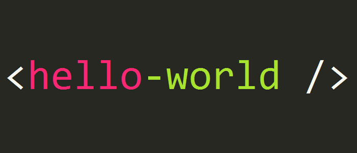
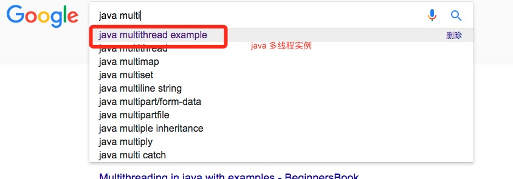
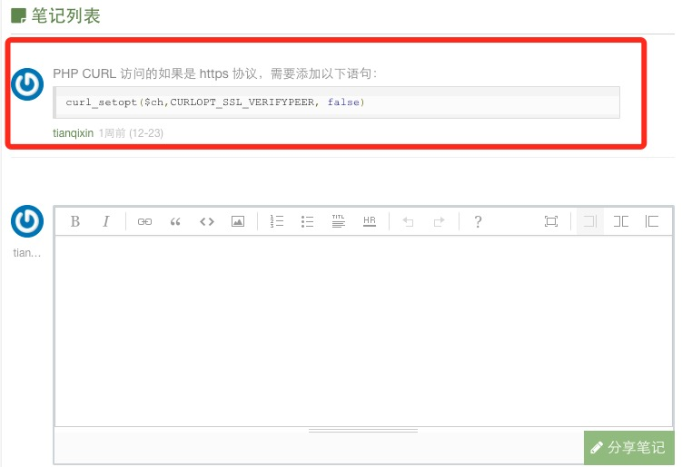

プログラマとしてここ数年、プログラミングを学びたい仲間と多く接してきたが、よく挙がる問題は「XXX言語にどう入門するか」「どうやってプログラミング言語をうまく学ぶか」といったものだ。ここでは初心者のいくつかの困惑をまとめて皆さんと共有したい。

1、どうやって入門するか？
プログラミングを学ぶ初日、ほとんどの人は「どうやって学べばいいのか」「どんな本を読むべきか」と考えるだろう。
入門したばかりのプログラマには、コンピューターサイエンスの正規課程出身であろうとなかろうと、まずは『XXX 入門から精通まで』のような本（評価の高いものを選ぶ）を買い、できれば動画も併用して、動画と本を組み合わせて読み進めることを勧める。ソフトウェア環境のインストールから最初の "Hello World！" を実行するところまで。
一部の仲間はフォーラムでベテランから『XXX プログラミング思想』を買うべきだと言われたことがあるかもしれない。この本は素晴らしく、XXX言語のバイブルだが、個人的には初心者には適さないと思う。この種の本はまさに初心者の悪夢であり、学習意欲を簡単に消し去ってしまう。
もちろん『XXX 入門から精通まで』のような本は入門にしか適さず、入門後は燃やしてしまって構わない。精通したいなら、『XXX プログラミング思想』を真剣に研究することをお勧めする。
本のサンプルコードは、自分で一文字ずつ打ち込んで実行・テストすることを勧める。最初は遅いかもしれないが、必ず通るべきプロセスだ。絶対に ctrl+c、ctrl+v だけはやめよう。
2、問題にぶつかったらどう解決するか？
プログラミング言語を学んでいると、さまざまな奇妙な問題に遭遇する。初心者が最も遭遇しやすいのは構文形式のエラーだ。例えば：
- 文末のセミコロンを書き忘れる、閉じ括弧が抜ける、スペースが足りない、など。
- キーワードや変数名を書き間違える。例えば $runoob を $runob と書いてしまう、String を Strng と書いてしまうなど。
- 等価判定のダブルイコール(==)をシングルイコール(=)と書いてしまう。また、== で等価判定できない言語もある。
- 代入の型が一致しない。整数型に文字列を代入している。
- インデントの形式が一致しない（python）。
- ……
上記のようなエラーは初心者に非常に多い。構文エラーであれば、通常IDEは優れたヒント機能を持っているので、その指示に従って修正すればよい。ただし、普段から注意深く、良いプログラミング習慣を身につけるようにしよう。
一方、実行後にしか表示されないエラーもある。大量の英語のメッセージが表示され、単語の一文字一文字は分かるのに、組み合わさるとまったく分からない。こういうとき多くの人は慌ててしまい、どうすればいいか分からなくなる。実は慌てる必要はない。落ち着いてほしい。これらはただの紙の虎だ。真剣に見て、英語が分からなければ翻訳ツール（Google、百度翻訳など）を借りれば、エラー内容は簡単に理解できる。
例えば以下の例：
……failed to open stream: No such file or directory in ……
もし分かるなら、実は意味は明確で「ファイルが見つからない」ということだ。分からなければ、Google 翻訳に入れると次のようになる：
......ストリームを開けませんでした：そのようなファイルまたはディレクトリはありません......
これで分かるだろう。その後、コード内に含まれているどのファイルが間違っているかを確認し、正しいファイル名やファイルパスに修正すれば解決できる。
もし中国語でも分からないなら、私はもうお手上げだ……
まとめると、コーディングは真剣で注意深く、フォーマットに気を配り、抜け漏れのないようにすること。優れたIDEを使って良いプログラミング習慣を身につけ、エラーに遭遇したら真剣に読み、分からなければ翻訳ツールで翻訳してから再度読むこと。
3、どこで人に質問・交流すればいいのか？
エラーメッセージを真剣に読んでもまだ解決方法が分からない場合は、以下の方法で解決することをお勧めする。
- 検索エンジン（百度、Google、Bingなど）であなたの問題やニーズを検索し、同じ問題に遭遇した人がいないか調べる。
- 技術フォーラムで質問する。例: 百度知道、CSDN、V2EX など。ただし、個人的にはこれはお勧めしない。返答を待つ必要があり、効率が低すぎるし、必ずしも求める回答が得られるとは限らないからだ。
- QQグループは、あなたが学んでいる言語の活発なQQグループを見つけて、グループ内で質問する。誰かが答えてくれれば最高だが、誰もいない場合は、グループメンバーのアクティブ度を確認し、活動的な数人に直接メッセージを送ってみよう。彼らが忙しくなければ、解決してくれるはずだ。
- 最良で最も直接的なのは、身近にいる技術の達人に聞くことだ。彼の一言であなたも理解できるかもしれない。
普段から優れた技術記事を多く保存しておこう。例: CSDN、博客园、菜鸟教程、简书、infoq、51cto、知乎など。先輩たちの経験や事例を多く見て、自分でもテストしてみよう。これらは皆さんの経験値の蓄積に大いに役立つ。
4、英語は重要か？
プログラミングを学ぶには英語がとても上手である必要があるか？ 必要ない。
英語力は重要か？ 非常に重要だ。
今では中国語の技術ドキュメント、ブログ、フォーラムも多く存在し、英語ができなくてもプログラミング言語を学ぶことはできる。しかし、多くのプログラミング言語の公式ドキュメントやソースコードのコメントは英語であり、多くの最先端技術も英語であることを理解すべきだ。英語のドキュメントを読まなければ、多くの本質を理解することはできず、翻訳版には不正確なものもある。
さらに、最も重要な点として、多くのエラーメッセージも英語である。英語力が高ければ、メッセージの内容を直接理解できるが、分からなければ翻訳ツールを使わなければならない。
多くの問題の解決策を百度で検索すると、結果は「呵呵……」となるかもしれない。しかし、英語で問題を記述できれば、その内容をGoogle（梯子が必要）の検索欄に放り込むだけで、最初の検索結果が80%の確率で必要な答えだ。
そのため、プログラミング言語でよく使われる英語の用語をしっかり学ぶことを強くお勧めする。英語が苦手なら、翻訳ツールを借りて読んでいけば、そのうちその良さが実感できるだろう。
例えば： debug => デバッグ ， debugger => デバッガ ， abstract => 抽象的な abstract base class => (ABC)抽象基底クラス ， abstract class => 抽象クラス ， import => インポート ， include => インクルード ， array => 配列 ， command line => コマンドライン ， comment => コメント ， commit => コミット ， compatible => 互換 ， compiler => コンパイラ ， component => コンポーネント ， array => 配列 ，thread => マルチスレッド ，multi-thread => マルチスレッド ， など

さらに詳しくは：プログラミングでよく使われる英語用語。
5、まとめと共有
まとめは、皆さんにとって最も難しいことだと思う。学生時代に毎日日記を1本書くように言われても、ほぼ誰も続けられなかったのと同じだ。
しかし、プログラミング学習の過程では、普段から自分が踏んだ落とし穴（失敗）をまとめ、学習プロセスを記録することをお勧めする。毎日1つではなく、3〜5日ごとに過去の学習を振り返ってまとめるのが良いだろう。特に、規範的なドキュメントやプログラムスクリプトを記録するとよい。例えば：
- XXX言語コーディング規約
- XXX言語の論理判定方法
- php で現在のURLを取得
- 正規表現でメールアドレス、電話番号にマッチ
- ツリー構造の再帰コード
- 中国語の文字化け解決策
- データベース接続コードのカプセル化
- ……
これらの機能は、プログラミング中に一度や二度ではなく、非常に頻繁に使うと確信している。だから、これらをまとめて自分のクラウドノート（有道云、印象笔记）に書いておくとよい。
最後は共有だ。良い問題解決策を持っているなら、あるいは自分の方法が世界一だと思うなら、各ブログプラットフォームを含めて共有してほしい。
ここでは、学習過程で自分の学習ノートを菜鸟教程に共有することをお勧めする。菜鸟教程にはノート機能が開設されている（登録が必要）。初回の共有は、管理人メールアドレス(429240967@qq.com)にノートを送信する必要がある。
審査を通過すると招待コードが発行され、登録できるようになる。以降は当プラットフォームで自分でノートを記録できる。ノートの内容は簡潔明瞭で、対応する記事の内容から逸脱してはならない。次のように：簡単な説明文 + 簡単なコードの形式で記録する。下図の通り：
